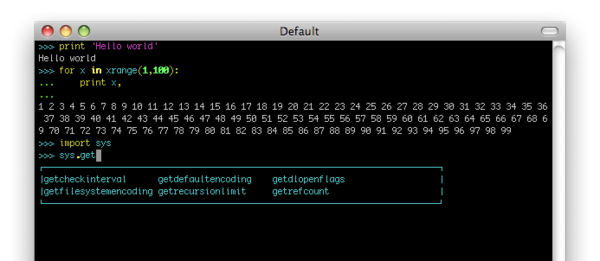

How Python Came To Be, The History of Python
by Mateo Vasquez and Jayden Angulo
Python is a high level programming language that is one of the best and easist to use coding languages. This make it easier for more people to understand and learn it, however, you might be thinking, how did python come to be? What was the process of its development and who were important names in its creation? Well if you are asking this, your in luck, as here we will explain all this and you will know more about one of the best coding languages.
Creation of Python
.jpeg)
You might be wondering who made python? Python was made by Dutch programmer Guido Van Rossum in the National Research Institute for Mathematics and Computer Science in the Netherlands. Started in 1989, it official release to the public was in 1991. Guido made python as a hobby project he would do over the holidays. Guido derived python from many other languages like ABC,C and C++,etc. But what he made incorperated these languages, was much simplier to understand, and fixed the limitations that other languages had.

Python 0.9.0-1.0

Python 0.9.0 was the first version of python released in 1991. By only this first version, it already had things like core data types (ex. lists, dictionaries) ,exception handling, functions, classes with inheritance.
.jpeg)
Python 2.0-Present Version
.jpeg)
In 2000, versiom 2.0 of python was released, with new features like unicode support, list comprehension, and garbage collection. Useful libraries like NumPy,SciPy, and more were also developed in this version. For many years during the 2000's this version of python was incredibly popular, with great traction in industries from web development all the way to scientific research. In 2008, Python 3.0 was released, revamping the langauge. It ws primarily made to remove discrepancies in python 2.0 versions, and it also faciliated transition between 2.0 and 3.0. Some of it's features include new syntax, more unicode support, and improved integer division.Today, small mirco-updates occur adding more small features to python. The current version of python as of November 23, 2025 is Python 3.11.2, released in February 2023.
Overview of Python
Python today now is one the most used and fasted growing programming languages of today. Python is used in everything nowadays, from web development to things like satilites and medical devices and to AI and machine learning. Since its heavily incoperated into AI and machine learning, two rapidly grow fields that will be the future, Python will stay relevent and be the programming language of the future. This is why it is so important to learn about python, as with more time, it will be more things and be vital to know about. Because of it's simplier nature, it will be easier to teach people python and more can understand it and therefore understand the world around them better.
Fun Facts about Python
- Python was not actually named after the snake, but after the BBC comedy show Monty Python's Flying Circus.
- It was only just Guido Van Rossum that made python, with no need of any big tech company or other programmers
- Guido Van Rossum, who made python, would later work for Google and Dropbox
- Python would go on to inspire many other langauges like Ruby, Julia, CoffeeScript, ECMAScript, Cobra, and more
Sources(websites we got our research from)
Thank You For Visting Our Website! -Jayden and Mateo